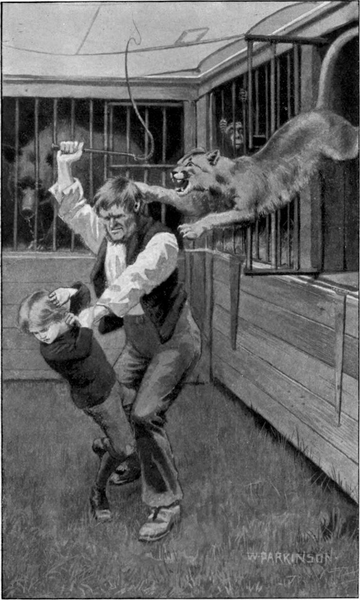

I need hardly say that by this time all the beasts with any friendliness in them had for Clare a little more than their usual amount of that feeling. But there was one between whom and him—I prefer who to which for certain animals—a real friendship had begun at once, and had grown and ripened rapidly till it was strong on both sides. Clare’s new friend—and companion as much as circumstance permitted—was the same whose lonely gambols had so much attracted him the night he first entered the menagerie. The animal, whom Clare had taken for a young lion—without being so far wrong, for he has often been called the American lion—was the puma, or couguar, peculiar to America, with a relation to the jaguar, also American, a little similar to that of the lion to the tiger. But while the jaguar is as wicked a beast as the tiger, the puma possesses, in relation to man, far more than the fabulous generosity of the lion. Like every good creature he has been misunderstood and slandered, but a few have known him. He has doubtless degenerated in districts, for as the wild animal must gradually disappear before the human, he cannot help becoming in the process less friendly to humanity; but an essential and distinctive characteristic of the puma is his love for the human being—a love persistent, devoted, and long-suffering.
Between such an animal and Clare, it is not surprising that friendship should at once have blossomed. He stroked the paw of the Indian lion the first morning, but the day was not over when he was stroking the cheek of the puma; while all he could do with the grizzly at the end of the month was to feed him a little on the sly, and get for thanks a growl of the worse hate. There are men that would soonest tear their benefactors, loathing them the more that they cannot get at them. I suspect that in some mysterious way Glum Gunn and the bear were own brothers. With the elephant Clare did what he pleased—never pleasing anything that was not pleasing to the elephant.
They came to a town where they exhibited every day for a week, and there it was that the friendship of Clare and the puma reached its perfection. One night the boy could not sleep, and drawn by his love, went down among the cages to see how his fellow-creatures were getting through the time of darkness. There was just light enough from a small moon to show the dim outlines of the cages, and the motion without the form of any moving animal. The puma, in his solitary yet joyous gymnastics, was celebrating the rites of freedom according to his custom. When Clare entered, he made a peculiar purring noise, and ceased his amusement—a game at ball, with himself for the ball. Clare went to him, and began as usual to stroke him on the face and nose; whereupon the puma began to lick his hand with his dry rough tongue. Clare wondered how it could be nice to have such a dry thing always in his mouth, but did not pity him for what God had given him. He had his arm through between the bars of the cage, and his face pressed close against them, when suddenly the face of the animal was rubbing itself against what it could reach of his. The end was, that Clare drew aside the bolt of the cage-door, and got in beside the puma. The creature’s gladness was even greater than if he had found a friend of his own kind. Noses and cheeks and heads were rubbed together; tongue licked, and hand stroked and scratched. Then they began to frolic, and played a long time, the puma jumping over Clare, and Clare, afraid to jump lest he should make a noise, tumbling over the puma. The boy at length went fast asleep; and in the morning found the creature lying with his head across his body, wide awake but motionless, as if guarding him from disturbance. Nobody was stirring; and Clare, who would not have their friendship exposed to every comment, crept quietly from the cage, and went to his own bed.
The next night, as soon as the place was quiet, Clare went down, and had another game with the puma. Before their sport was over, he had begun to teach him some of the tricks he had taught Abdiel; but he could not do much for fear of making a noise and alarming some keeper.
The same thing took place, as often as it was possible, for some weeks, and Clare came to have as much confidence, in so far at least as good intention was concerned, in the puma as in Abdiel. If only he could have him out of the cage, that the dear beast might have a little taste of old liberty! But not being certain how the puma would behave to others, or if he could then control him, he felt he had no right to release him.
Now and then he would fall asleep in the cage, whereupon the puma would always lie down close beside him. Whether the puma slept, I do not know.
On one such occasion, Clare started to his feet half-awake, roused by a terrific roar. Right up on end stood the couguar, flattening his front against the bars of the cage, which he clawed furiously, snarling and spitting and yelling like the huge cat he was, every individual hair on end, and his eyes like green lightning. Clatter, clatter, went his great feet on the iron, as he tore now at this bar now at that, to get at something out in the dim open space. It was too dark for Clare to see what it was that thus infuriated him, but his ear discovered what his eye could not. For now and then, woven into the mad noise of the wild creature, in which others about him were beginning to join, he heard the modest whimper of a very tame one—Abdiel, against whose small person, gladly as he would have been “naught a while,” this huge indignation was levelled. Must there not be a deeper ground for the enmity of dogs and cats than evil human incitement? Their antipathy will have to be explained in that history of animals which I have said must one day be written.
Clare had taken much pains to make Abdiel understand that he was not to intrude where his presence was not desired—that the show was not for him, and thought the dog had learned perfectly that never on any pretence, or for any reason, was he to go down those steps, however often he saw his master go down. This prohibition was a great trial to Abdiel’s loving heart, but it had not until this night been a trial too great for his loving will.
When Clare left him, he thought he had taken his usual pains in shutting him into a small cage he had made to use on such occasions, lest he might be tempted to think, when he saw nobody about, that the law no longer applied. But he had not been careful enough; and Abdiel, sniffing about and finding his door unfastened, had interpreted the fact as a sign that he might follow his master. Hence all the coil. For pumas—whereby also must hang an explanation in that book of zoology, have an intense hatred of dogs. Tame from cubhood, they never get over their antipathy to them. With pumas it is “Love you, hate your dog.” In the present case there could be no individual jealousy, of which passion beasts and birds are very capable, for Pummy had never seen Abby before. There may be in the puma an inborn jealousy of dogs, as a race more favoured than pumas by the man whom yet they love perhaps more passionately.
As soon as Clare saw what the matter was, he slipped out of the cage, and catching up the obnoxious offender—where he stood wagging all over as if his entire body were but a self-informed tail—sped with him to his room, and gave him a serious talking-to.
The puma was quiet the moment the dog was out of his sight. Doubtless he regarded Clare as his champion in distress, and blessed him for the removal of that which his soul hated. But, alas, mischief was already afoot! Gunn, waked by the roaring, came flying with his whip, and the remnants of poor Pummy’s excitement were enough to betray him to the eyes of the tamer of caged animals. Clare would have recognized by the roar itself the individual in trouble; but Glum Gunn had little knowledge even of the race. He counted the couguar a coward, because he showed no resentment. A man may strike him or wound him, and he will make no retaliation; he will even let a man go on to kill him, and make no defence beyond moans and tears. But Gunn knew nothing of these facts; he only knew that this puma would not touch him. He was not aware that if he turned the two into the arena of the show, the puma would kill the grizzly; or that in their own country, the puma persecutes the jaguar as if he hated him for not being like himself, the friend of man: the Gauchos of the Pampas call him “The Christians’ Friend.” Gunn did not even know that the horse is the puma’s favourite food: he will leap on the back of a horse at full speed, with his paws break his neck as he runs, and come down with him in a rolling heap. Neither did he know that, while submissive to man—as if the maker of both had said to him, “Slay my other creatures, but do my anointed no harm,”—he could yet upon occasion be provoked to punish though not to kill him.
Glum Gunn rushed across the area, jumped into the cage of the puma, and began belabouring him with his whip. The beast whimpered and wept, and the brute belaboured him. Clare heard the changed cry of his friend, and came swooping like the guardian angel he was. When he saw the patient creature on his haunches like a dog, accepting Gunn’s brutality without an attempt to escape it—except, indeed, by dodging any blows at his head so cleverly that the ruffian could not once hit it—he bounded to the cage, wild with anger and pity. But Gunn stood with his back against the door of it, and he was reduced to entreaty.
“Oh, sir! sir!” he cried, in a voice full of tears; “it was all my fault! Abby came to look for me, and I didn’t know Pummy disliked dogs!”
“Do you tell me, you rascal, that you were down among the hanimals when I supposed you in your bed?”
“Yes, sir, I was. I didn’t know there was any harm. I wasn’t doing anything wrong.”
“Hold your jaw! What was you doing?”
“I was only in the cage with the puma.”
“You was! You have the impudence to tell me that to my face! I’ll teach you, you cotton-face! you milk-pudding! to go corrupting the hanimals and making them not worth their salt!”
He swung himself out of the cage-door in a fury, but Clare, with his friend in danger, would not run. The wretch seized him by the collar, and began to lash him as he had been lashing the puma. Happily he was too close to him to give him such stinging blows.
With the first hiss of the thong, came a tearing screech from the puma, as he flung himself in fury upon the door of his cage. Gunn in his wrath with Clare had forgotten to bolt it. Dragging with his claws, he found it unfastened, pulled it open, and like a huge shell from a mortar, shot himself at Gunn. Down he went. For one moment the puma stood over him, swinging his tail in great sweeps, and looking at him, doubtless with indignation. Then before Clare could lay hold of him, for Clare too had fallen by the onset, Pummy turned a scornful back upon his enemy, and walking away with a slow, careless stride, as if he were not worth thinking of more, leaped into his cage, and lay down. The thing passed so swiftly that Clare did not see him touch the man with his paw, and thought he had but thrown him down with his weight. The beast, however, had not left the brute without the lesson he needed; he had given him just one little pat on the side of the head.

Gunn rose staggering. The skin and something more was torn down his cheek from the temple almost to the chin, and the blood was streaming. Clare hastened to help him, but he flung him aside, muttering with an oath, “I’ll make you pay for this!” and went out, holding his head with both hands.
Clare went and shot the bolt of the cage. Pummy sprang up. His tail and swift-shifting feet showed eager expectation of a romp. He had already forgotten the curling lash of the terrible whip! But Clare bade him good-night with a kiss through the bars.
Glum Gunn kept his bed for more than a week. When at length he appeared, a demonstration of the best art of the surgeon of the town, he was not beautiful to look upon. To the end of his evil earthly days he bore an ugly scar; and neither his heart nor his temper were the better for his well deserved punishment.
Mrs. Halliwell questioned Clare about the whole thing, inquiring further and further as his answers suggested new directions. Her catechism ended with a partial discovery of Gunn’s behaviour to her protegé, whom she loved the more that he had been so silent concerning it. She stood perturbed. One moment her face flushed with anger, the next turned pale with apprehension. She bit her lip, and the tears came in her eyes.
“Never mind, mother,” said Clare, who saw no reason for such emotion; “I’m not afraid of him.”
“I know you’re not, sonny,” she answered; “but that don’t make me the less afraid for you. He’s a bad man, that brother-in-law of mine! I fear he’ll do you a mischief. I’m afraid I did wrong in taking you! I ought to have done what I could for you without keeping you about me. We can’t get rid of him because he’s got money in the business. Not that he’s part owner—I don’t mean that! If we’d got the money handy, we’d pay him off at once!”
“I don’t care about myself,” said Clare. “I don’t mean I like to be kicked, but it don’t make me miserable. What I can’t bear is to see him cruel to the beasts. I love the beasts, mother—even cross old Grizzly.—But Mr. Gunn don’t meddle much with him!”
“He respects his own ugly sort!” answered Mrs. Halliwell, with a laugh.
For a while it was plain to Clare that the master kept an eye on his brother, and on himself and the puma. On one occasion he told the assembled staff that he would have no tyranny: every one knew there was among them but one tyrant. Gunn saw that his brother was awake and watching: it was a check on his conduct, but he hated Clare the worse. For the puma, he was afraid of him now, and went no more into his cage.
With the rest of the men Clare was a favourite, for they knew him true and helpful, and constantly the same: they could always depend on him! Abdiel shared in the favour shown his master. They said the dog was no beauty, and had not a hair of breeding, but he was almost a human creature, if he wasn’t too good for one, and it was a shame to kick him.